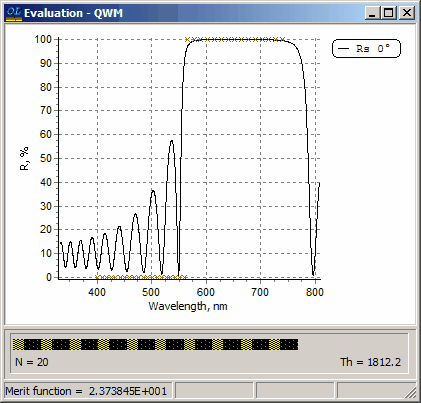
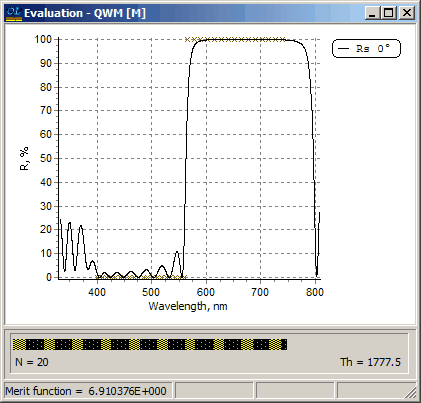

Exercise 6. Design of an edge filter
Exercise 6. Design of an edge filter
In the Problem directory EX6 you will find data necessary for the design of a short-wave-pass edge filter with the target reflectance equal to 0 in the spectral region from 400 to 560nm and 100% in the spectral region from 560 to 740nm at the normal light incidence. Open the Target database and browse the file with the name Ef-swp. Note that the transition zone between 0 and 100% reflectance levels is very narrow (only 5nm).
In SF Mode you need to use Import Problem Directory command (File Menu).
Load the target file to memory. Also load substrate GLASS and layer materials SIO2 and TIO2. As a starting design we will use a 20 layer quarter-wave mirror with the control wavelength 650nm. This mirror is specified in the file QWM in the Design database. Load it also. Open Evaluation window and note that this mirror is a rather good starting design for the considered problem because it has required properties in the high-reflection zone. The control wavelength of 650nm was chosen to adjust the high reflection band of the mirror to the spectral region from 565 to 740nm where the target reflectance is equal to 100%.

In the Analysis and Synthesis Options dialog select the Newton method and then go to Refinement command in the Synthesis menu. After a few iterations of the optimization procedure you will get a 20 layer edge filter with the merit function value equal to 6.910376E+000 (see below).
